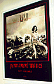
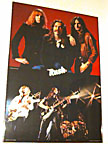
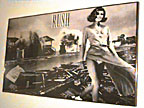
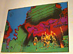

"album promo"
24" x 28" (??)
Album cover on a black background with "permanent waves now available" written
underneath in red script. The newspaper headline is blacked out.
|

"concert/portrait split"
24" x 36"
From Scotland (1980), upper half is studio picture of the band, lower half
is a concert shot circa Permanent Waves.
|

"album cover"
38" x 25"
Close-up shot of the Permanent Waves cover with a white border. "permanent
waves" is written in gold. The newspaper headline is blocked out in white.
|

"psychedelic concert"
39" x 26"
Poster from the UK with no date or manufacturer. Permanent Waves era
judging by the picture. Small concert shot of the band in the lower right,
covered by a psychedelic-colored picture, perhaps the outline of a country?
A black man w/star is in the upper left corner.
|